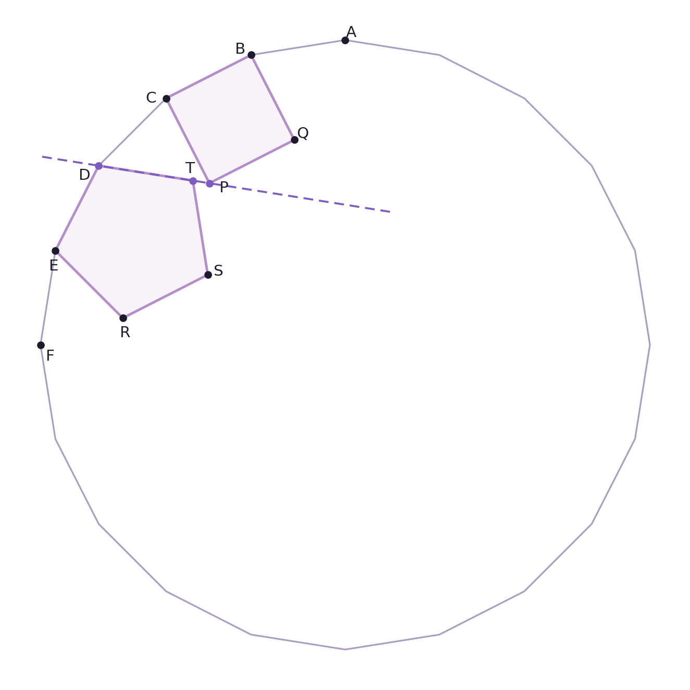

Ver el código de la figura
import numpy as np
import matplotlib.pyplot as plt
VIOLETA, VIOLETA2, TINTA, GRIS = "#7c5cbf", "#b48ec8", "#1e1a2e", "#a99fc0"
# --- icosagono regular de lado 1 ---
n = 20
R = 1 / (2 * np.sin(np.pi / n)) # circunradio para lado 1
ang = np.pi / 2 + np.arange(n) * 2 * np.pi / n # arranca arriba
V = np.c_[R * np.cos(ang), R * np.sin(ang)]
A, B, C, D, E, F = V[0], V[1], V[2], V[3], V[4], V[5]
def poligono_regular_sobre_lado(P1, P2, n, hacia):
"""Vertices de un poligono regular de n lados que tiene a P1P2 como lado,
construido del lado en que queda el punto `hacia`. Devuelve los n vertices
empezando en P1 y siguiendo por P2."""
L = np.linalg.norm(P2 - P1)
M = (P1 + P2) / 2
apotema = L / (2 * np.tan(np.pi / n))
d = (P2 - P1) / L
nor = np.array([-d[1], d[0]])
if np.dot(hacia - M, nor) < 0:
nor = -nor
O = M + apotema * nor # centro del poligono
t1 = np.arctan2(*(P1 - O)[::-1])
t2 = np.arctan2(*(P2 - O)[::-1])
paso = (t2 - t1 + np.pi) % (2 * np.pi) - np.pi # sentido de P1 a P2
R = np.linalg.norm(P1 - O)
return np.array([O + R * np.array([np.cos(t1 + k * paso),
np.sin(t1 + k * paso)]) for k in range(n)])
centro = V.mean(axis=0)
# cuadrado BCPQ: sus vertices consecutivos son B, C, P, Q
cuadrado = poligono_regular_sobre_lado(B, C, 4, centro)
P, Q = cuadrado[2], cuadrado[3]
# pentagono DERST: sus vertices consecutivos son D, E, R, S, T
pentagono = poligono_regular_sobre_lado(D, E, 5, centro)
Rp, Sp, Tp = pentagono[2], pentagono[3], pentagono[4]
fig, ax = plt.subplots(figsize=(7, 7))
poly = np.vstack([V, V[0]])
ax.plot(poly[:, 0], poly[:, 1], color=GRIS, lw=1.2)
for fig_pts in (cuadrado, pentagono):
cerr = np.vstack([fig_pts, fig_pts[0]])
ax.plot(cerr[:, 0], cerr[:, 1], color=VIOLETA2, lw=1.8)
ax.fill(cerr[:, 0], cerr[:, 1], color=VIOLETA2, alpha=.10)
# la recta por D y P, extendida
dirv = (P - D) / np.linalg.norm(P - D)
ext = np.array([D - .6 * dirv, D + 3.1 * dirv])
ax.plot(ext[:, 0], ext[:, 1], color=VIOLETA, lw=1.4, ls=(0, (5, 3)))
for p, nombre, dx, dy in [(A, "A", .06, .08), (B, "B", -.12, .06), (C, "C", -.16, 0),
(D, "D", -.15, -.10), (E, "E", -.02, -.16), (F, "F", .10, -.12),
(P, "P", .15, -.05), (Q, "Q", .09, .07),
(Rp, "R", .02, -.15), (Sp, "S", .11, .04), (Tp, "T", -.03, .13)]:
ax.plot(*p, "o", ms=4.5, color=VIOLETA if nombre in "DPT" else TINTA, zorder=5)
ax.text(p[0] + dx, p[1] + dy, nombre, fontsize=11, color=TINTA, ha="center", va="center")
ax.set_aspect("equal"); ax.axis("off")
fig.tight_layout()
plt.show()